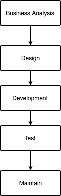

Business analysis is an important phase in SDLC(Software Development Life Cycle). It defines the boundary, the value and the target of the software system. As a developer, I find that most of the developers could not tell the difference between them and how they work together. In this article, I'll try to explain them. This will help developers to konw how to understand business requirement and how to use them.
1 Business analysis
Business analysis plays an important role in SDLC. Actually, now we have a lot of software development methods now: TDD(Test Driven Development), BDD(Behiver Driven Development), DDD(Data Driven Development), another DDD(Domain Driven Development). But I think they all base on the classic Waterfall Model with some changes.

Figure 1: The Waterfall Model
Business is the entry of the software development. Actually, there is always gap between each other. Because, the stakeholder always works at their own Absctraction Level, they try to look at the system in different viewpoint. As a developer, we'd better understand BA very well too. At least the conceptions of them and how they work together, try to eliminate the gap and make full use of it. By the way, BDD is trying to solve this problem.
2 Conceptions of BA(Business Analysis)
2.1 What's a requirement?
Requirements describe the functionality of a system; i.e., a requirement describes what a system must do.
For example, a CROS requirement is: “The CROS solution shall provide the capability to periodically review the assigned reporting basis for all active accounts and update the account reporting basis and related attributes.” A business rule associated to this requirement is: Exclude the following accounts from the Automated Annual Reporting Basis Review: a. Account has a Basis Review Protection (BRP) code b. Accounts that are closed out or inactive c. Accounts open less than 12 months from the run date of the automated review process d. Accounts with Account Characteristic Code 34 (Qualified Purchaser)
2.2 What is a business rule(BR)?
Business rules describe the conditions or constraints that you must know or follow to fulfill a requirement. Business rules are typically defined by law or policy and are rarely changed. In fact, business rules must be followed regardless of whether there is a system to support business objectives or whether activities are done manually.
2.3 What is a business process(BP)?
Business processes are a collection of related, structured activities or tasks that produce a specific service or product for a particular customer.
2.4 How do requirements, business rules, business processes differ?
Business requirements explain what a system must accomplish. Business rules explain the conditions that must be fulfilled to meet a requirement. Business processes group activities involving one or more people or systems necessary to meet a business objective.
3 How Business Process Models, Concept Models, and Business Rules Relate: It's All About What State You're In
Business Process Models: A completed transform often achieves a business milestone and a new state for some operational business thing(s). Example: claimant notified.
Structured Business Vocabulary (Concept Models): In concept models (also called fact models) such states are represented by verb concepts (also called fact types) — for example, claimant is notified (or claimant has been notified, if you prefer). A concept model literally represents what things the business can know (remember) about completed transforms and other operational business events.
Business Rules: Business rules indicate which states are allowed or required. They should not reference business processes or business tasks by name, just the states they try to achieve. For example, a business rule might be: A claimant may be notified that a claim has been denied only if the specific reason(s) for denial have been determined.
4 Manifestos
Like the Agile Manifesto, BP and BR have manifesto too. You can refer to BP-Manifesto and BR-Manifesto. It's helpful to understand them furtherly.
5 Community
https://www.brcommunity.com/ and https://www.bptrends.com are two good webstites about BR and BP. We could learn more about them.
6 Recap
If you're looking to manage business activities on a business-process basis, stability is key. But business rules aren't stable. In fact, many change quite rapidly. What should you do? Separate the business rules from the business process model, so the business process model can do its job.
Adherence to the best practices identified in this discussion is also how you keep a business process model simple. Frankly, most business processes aren't nearly as complicated as people think. What's complicated is the know-how needed to perform the business process correctly. That know-how should be represented by business rules.
Business rules describe what you may or may not do in a specific business scenario. Business rules also give the criteria, conditions, and exceptions for making these decisions.
Business requirements capture what a user must do to implement and/or comply with a business rule.
You may need different sets of business requirements to implement different sets of business rules — for example, when dealing with complex business processes that have complicated conditions and exceptions.
Business rules are independent of business requirements and shouldn't be changed to accommodate a requirement. Be careful when changing a business rule in case it impacts how a business process functions.
7 Referrencs
- Business Rules in Business Processes ~ Rules for Process and Rules for Product/Service
- Business Processes: Better with Business Rules
- Implementation of business rules and business processes in SOA
- The Difference Between Business Rules and Business Processes
- Process Modeling with Business Rules
- An Introduction to "The Business Process Manifesto"
- The Business Rules Manifesto
- What is the Difference between a Business Rule and a Business Requirement?
- Business Rules vs. Business Requirements